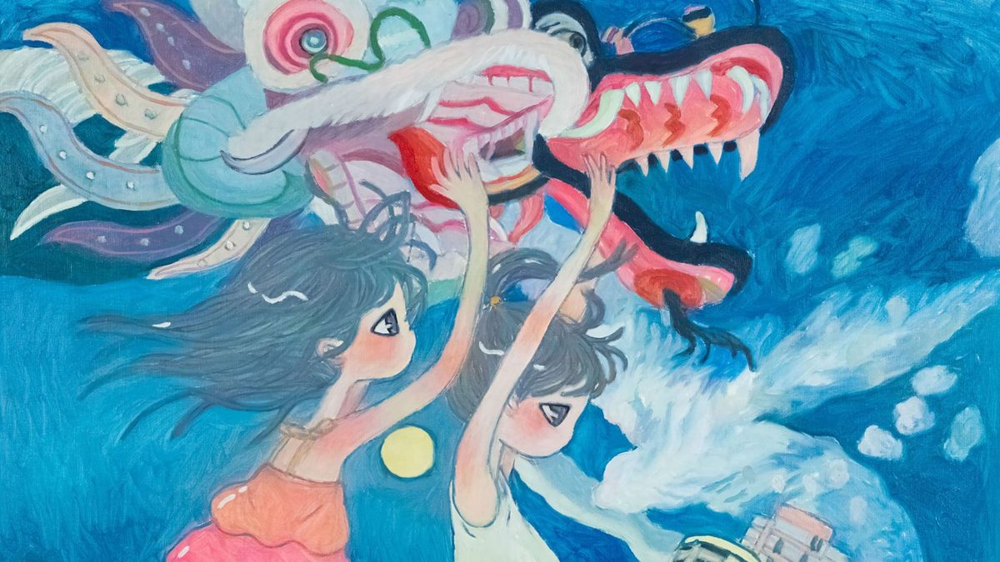

Exhibitions
shows and collaborations

Timeline
- 1997First show, "SHU WA KIMASERI," shop33, Tokyo
- 2000Superflat group show, Tokyo (then Los Angeles, 2001)
- 2002"Space Ship EE," Nano Galerie, Paris
- 2005Little Boy group show, Japan Society, New York
- 2006"City Dog," Parco Museum, Tokyo
- 2012"Heaven Is Inside Of You," Perrotin, Hong Kong
- 2019"UNIO MYSTICA," Perrotin, New York
- 2023"New Myth," Musée d'art contemporain de Lyon, France
Collaborations
Issey Miyake
Prints for Issey Miyake's fashion line with designer Naoki Takizawa, including the 2004 to 2005 Autumn/Winter collection.
New York subway
A poster for the New York City subway in 2005.
Books
[add books]